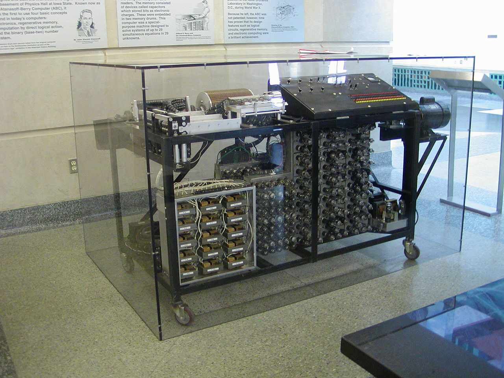

История создания компьютера
Идея первого компьютера возникла еще в XIX веке, но тогда никто толком не понимал, как ее реализовать. И только во время Второй мировой началась настоящая гонка по созданию мощных вычислительных машин
Когда появился первый компьютер
Люди с давних времен сталкивались с необходимостью решать задачи, которые требовали сложных вычислений. Нужно было проводить землемерные работы, торговать, собирать налоги, управлять запасами урожая, путешествовать. Сначала считали на пальцах, камнях, узелках, а потом придумали первые счеты и логарифмические линейки. Кстати, само слово «компьютер» (от англ. compute — «вычислять») долгое время использовали для обозначения человека, производящего расчеты.
В Средние века уже стало понятно, что без специальных машин не обойтись. Так появились первые суммирующие устройства и арифмометры. Прообраз будущего электронного сумматора — важнейшего элемента будущих ЭВМ — описал еще Леонардо да Винчи. В 1969 году специалисты из IBM воспроизвели по чертежам машину да Винчи и еще раз убедились в гениальности ученого.
Далее была счетная машина Вильгельма Шиккарда, суммирующая машина Блеза Паскаля (знаменитая «Паскалина»), счетная машина Готфрида Вильгельма Лейбница и аналогичные изобретения других ученых.
Откуда вообще взялась идея программировать вычислительные операции? Все просто: нужно было все время сонастраивать механизмы башенных часов с системой колоколов. Кроме того, похожие задачи возникали и в других отраслях, например в швейной промышленности. В 1804 году появились перфокарты Жозефа Жаккара для ткацких станков, которые считаются первым устройством для запоминания и ввода информации.
Но ближе всех к созданию компьютера подошел в XIX веке профессор математики Кембриджского университета Чарлз Бебидж, разработавший основные принципы построения вычислительных машин, среди которых программное управление, использование перфокарт и деление информации на разные типы. А первым в истории программистом называют соратницу Бебиджа Аду Лавлейс — дочь знаменитого поэта Байрона. К сожалению, реализовать все идеи кембриджского профессора так и не удалось — это требовало слишком больших затрат, однако его вклад в развитие вычислительной техники трудно переоценить. Две его машины — разностная (1822 год) и аналитическая (1830 год) — опередили свое время.
Прошло еще почти сто лет, прежде чем появился полноценный компьютер в привычном понимании этого слова. Первой в мире ЭВМ считается машина ENIAC — проект американских ученых Джона Моучли и Джона Эккерта, который они представили в 1942 году. Но ENIAC возник не сам по себе: примерно в одно и то же время появилось несколько машин, которые с оговоркой тоже могут претендовать на звание первого компьютера.
Кто изобрел компьютер
Несмотря на то что основоположником идеи первого механического компьютера считается Чарлз Бебидж, только в 40-е годы XX века люди всерьез задумались о необходимости строить мощные машины, способные автоматически выполнять сложные технические расчеты. И для этого была веская причина — Вторая мировая война. Умение кодировать и декодировать большие объемы информации давало неоспоримое преимущество в военных действиях. Разработки велись в разных странах, поэтому на роль отца-основателя компьютера претендовали сразу несколько ученых.
Конрад Цузе
Немецкого инженера Цузе часто называют изобретателем компьютера. Он первым объединил в вычислителе арифметические и логические операции, ввел термин «машинное слово», а также изобрел язык программирования Plankalkul. В 1938 году была готова его машина с программным управлением Z1. Сегодня ее воссозданная модель хранится в Музее вычислительной техники в немецком Падеборне.
Z1 ученый строил в гостиной дома родителей, она помещалась на площади примерно 4 кв.м и была полностью механической, на рычажной основе. Далее были модели Z2, где уже применялись электромагнитные телефонные реле, и Z3, которая умножала два числа за пять секунд. Последнюю использовали для проектирования крылатых ракет «Фау».
Именно Z3 считают первым работоспособным программируемым компьютером. Z4 должна была стать еще более мощной машиной, но в 1942 году руководство Третьего рейха было уверено, что война скоро закончится, и вкладывать деньги в долгосрочные проекты не посчитало нужным.
Во время бомбардировок Берлина все машины Цузе были уничтожены, за исключением недостроенной модели Z4, которую ученый успел вывезти в Альпы. Иногда о машинах Цузе говорят как о «компьютерах Гитлера» (из-за источника финансирования), но при этом сам Цузе членом партии не был и, по слухам, идеологию фашизма не разделял.
Z3 и Конрад Цузе
Джон Атанасов
Американский физик Джон Атанасов в 1939 году опубликовал концепцию современной вычислительной машины, где расчет проводится с помощью логических (а не математических) действий и где использовалась двоичная система исчисления.
В том же году вместе с напарником Клиффордом Э.Берри он строит машину ABC (Atanasoff Berry Computer), способную решать линейные уравнения с несколькими десятками неизвестных. Ее называют первым электронным компьютером. Оперативное запоминающее устройство ABC было выполнено на вращающемся барабане с конденсаторами, а арифметическое — на радиолампах. Данные вводились с помощью перфокарт. Но проект так и не был закончен, потому что США вступили в войну и Атанасов перешел на службу в военно-морскую лабораторию.
При этом в 1973 году окружной суд США в Миннеаполисе признал, что основные идеи Дж. Моучли, реализованные позже в ЕNIАС, были получены от Атанасова.
Реплика компьютера Атанасова и Берри
Алан Тьюринг
Все, кто хоть немного интересуется информатикой и IT, встречали термин «машина Тьюринга». Алан Тьюринг — английский математик, автор того самого теста, который успешно должен пройти искусственный интеллект к 2029 году.
24-летний Тьюринг в 1936 году выпускает работу, где описывает устройство для решения проблемы математической логики, создает первую модель универсальных вычислений. По сути, он объяснил, что машина может решить любую задачу при условии, что ее (задачу) можно алгоритмизировать.
Машина Тьюринга состоит из программы, ленты с ячейками, автомата или головки для чтения и записи. Данные подаются на ленту, которая поделена на ячейки, каждая из которых либо содержит символ, либо является пустой. Машина может обрабатывать символы, стирать или записывать их в соответствии с инструкциями внутри памяти. Запись, вычисление и сдвиг — именно эти три операции повторяет машина Тьюринга. Этот алгоритм даже сегодня используют для оценки возможностей квантовых компьютеров.
Модель машины Тьюринга
Джон Моучли и Джон Эккерт
Американцы Моучли и Эккерт в 1945 году презентовали компьютер ENIAC (Electronic Numerical Integrator and Calculator) — первый электронный цифровой вычислитель для широкого спектра задач, работал полностью на электронных схемах.
Проект, разработанный еще в 1942 году, лежал без дела, пока им не заинтересовались американские военные. В условиях строгой секретности машину весом 30 т, занимавшую площадь почти 300 кв. м, собирали более двухсот специалистов.
ЕNIАС работал на лампах (их было 17 468!) и мог выполнять 5 тыс. операций сложения в секунду. Правда, лампы все время приходилось менять, потому что они перегорали, и это существенно осложняло взаимодействие с компьютером.
Первая в мире ЭВМ — ENIAC — была готова уже после завершения Второй мировой войны, и ее сразу же задействовали в работах по созданию водородной бомбы.
Первая ЭВМ — ENIAC
Первый компьютер в России
В нашей стране история вычислительной техники началась в 1948 году. Авторы первого проекта автоматической цифровой вычислительной машины — Исаак Брук и Башир Рамеев. 4 декабря они получили авторское свидетельство на изобретение, поэтому именно эта дата считается неофициальным днем рождения российской информатики.
Рамеев и Брук вдохновились идеей ЕNIАС, но делали упор на то, что бесконечно ломавшиеся электронные лампы стоит заменить на миниатюрные полупроводниковые диоды, которые впоследствии можно будет использовать не только для стационарных, но и передвижных компьютеров. Однако вычислительную машину М-1 удалось собрать только к декабрю 1951 года.
Фото АЦВМ M-1
А в 1948 году Сергей Лебедев — директор Института электротехники Академии наук в Киеве — начинает работать над малой электронной счетной машиной МЭСМ, которая в итоге и получит статус первой в Союзе электронной цифровой вычислительной машины, ее выпустят на несколько месяцев раньше, чем М-1.
МЭСМ размещалась на площади 60 кв. м. 6 тыс. электронных ламп и трехадресная система команд позволяли выполнять 50 операций в секунду, но внешняя память у машины отсутствовала. МЭСМ не стали запускать в серийное производство, однако большинство первых советских программистов обучались именно на ней. Позже под руководством Лебедева были созданы 15 типов ЭВМ — от ламповых до суперкомпьютеров на интегральных схемах.
Первый персональный компьютер
В 1980-х годах прошлого века началась эпоха персональных компьютеров — малогабаритных машин, которыми могли пользоваться люди без профильного образования.
Чтобы уменьшить в разы аппаратную часть компьютера, понадобились микропроцессоры. Впервые их начала выпускать компания Intel в 1971 году. При стоимости $200 четырехбитный Intel 4004 превосходил по производительности ENIAC — выполнял 60 тыс. операций в секунду.
Первый персональный компьютер, который получил массовое распространение, выпустила в 1981 году компания IBM. Модель PC 5150 имела объем памяти 64 килобайта, а жесткий диск в нем заменяли маленькие дисководы.
Но еще в 1977 году был представлен один из успешных персональных компьютеров того времени — Apple II, который потом в различных вариациях успешно продавался в течение 16 лет.
Первым советским ПК считается ПЭВМ «Агат» 1982 года, где за основу был взят микропроцессор, похожий на тот, что стоял в Apple II. Но даже после этого в стране не возник компьютерный бум, как в США. Видимо, считалось, что советским гражданам высокотехнологичные машины дома попросту не нужны — это же не холодильник и не телевизор. Однако это не остановило народных умельцев — инженеры-самоучки, проявляя чудеса смекалки, собирали собственные компьютеры по чертежам, которые были опубликованы в иностранных журналах.
ПЭВМ «Агат-7»
История развития вычислительной техники в наши времена привела к созданию практически совершенных цифровых машин. И пока неизвестно, что будет дальше. Но разработчики стараются производить «девайсы», которые требовали бы минимального вмешательства человека в процесс работы.